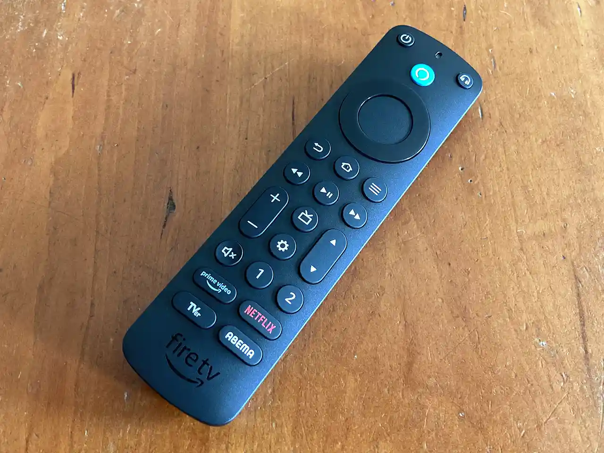

<pre>Fire TV StickのリモコンをPCで使うには、**スマートフォンアプリ（Fire TVリモコンアプリ）を使うか、PCでAndroidエミュレータ**を動かしてFire TVリモコンアプリをインストールする方法があります。PCからFire TV Stickへ画面をキャスト（ミラーリング）したい場合は、Windowsの「接続」機能（Miracast）や、専用アプリ（AirPinなど）を使う方法もありますが、これはリモコン操作とは別です。 
			
PCからFire TV Stickを操作する方法（リモコンアプリ）
スマートフォンアプリを使う（最も簡単）:
お使いのスマホ（iPhone/Android）で「Amazon Fire TV」アプリをダウンロードします。
Fire TV Stickとスマホが同じWi-Fiネットワークに接続されていることを確認します。
アプリを起動し、Fire TV Stickを選択してペアリングすれば、スマホがリモコンになります。
Androidエミュレータを使う（PCネイティブ操作）:
PCにBlueStacksやLDPlayerなどのAndroidエミュレータをインストールします。
エミュレータ内でGoogle Playストアにアクセスし、「Fire TV Remote」などのリモコンアプリを検索してインストールします。
エミュレータ内のアプリを起動し、Fire TV Stickと接続すれば、PCのマウスやキーボードで操作できます。 
Fire TV Stickの画面をPCに表示（ミラーリング）する方法（操作とは別）
Windowsのキャスト機能: Fire TV Stickでミラーリングモードにし、PCの「アクションセンター」から「接続」を選び、Fire TV Stickを選択します（同じネットワークが必要）。
専用アプリ: AirPinなどのアプリをFire TV StickとPC両方にインストールし、PCからFire TV Stickの画面をミラーリングする方法もあります。 
ポイント
Fire TV Stick自体はPCのマウスやキーボードでは直接操作できません。スマホアプリかエミュレータ経由のリモコンアプリが必要です。
PCモニターでFire TV Stickを使う場合、リモコンの音量ボタンが効かないことがあります。これはFire TV Stick側で音量調整する専用ソフトが必要になるケースがあります</pre>